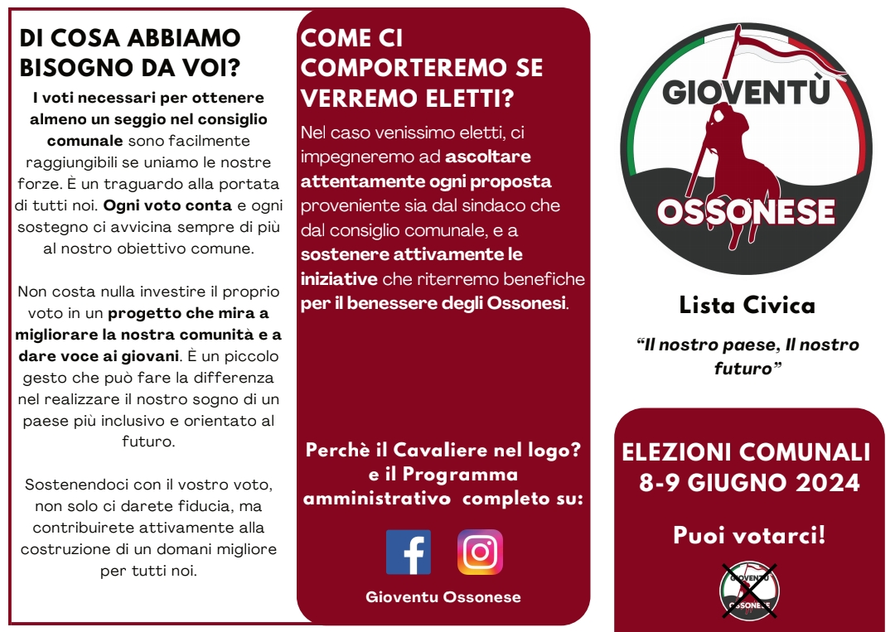
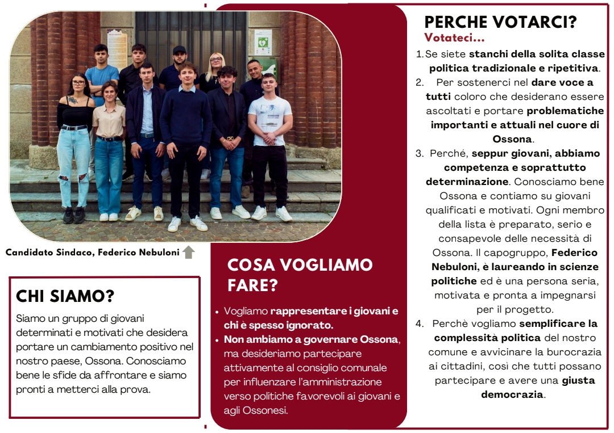
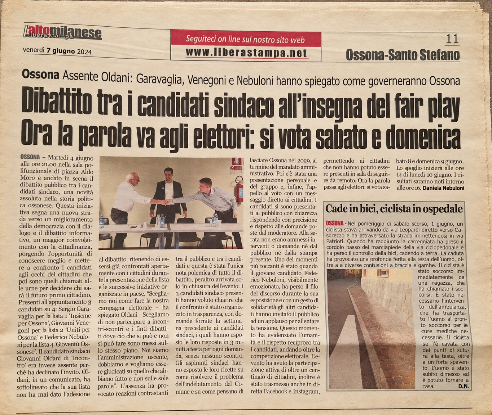

Why I did it
I wanted to participate directly in my town's public life. Running meant putting myself forward, gathering ideas, speaking with people who understood problems differently, and trying to build a shared proposal.
What I learned
The experience called for clear communication, listening to objections and making difficult decisions. I do not present it as a professional title; it is part of my personal journey and shows my willingness to take initiative.
Campaign materials
The list's leaflet and a newspaper article covering the public debate between candidates. Select an image to open it at full size.
Gioventù Ossonese on Facebook


A verifiable result
Gioventù Ossonese received 198 votes, or 8.64% of valid votes, according to the official election sheet published by the Metropolitan City of Milan.